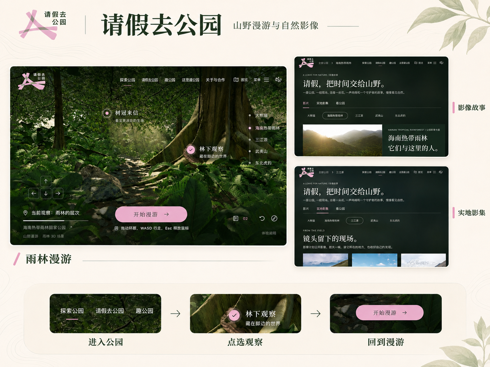
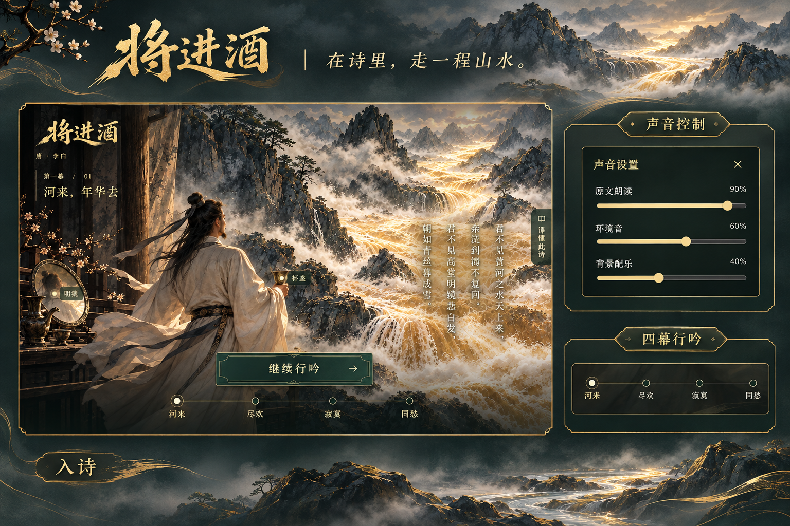
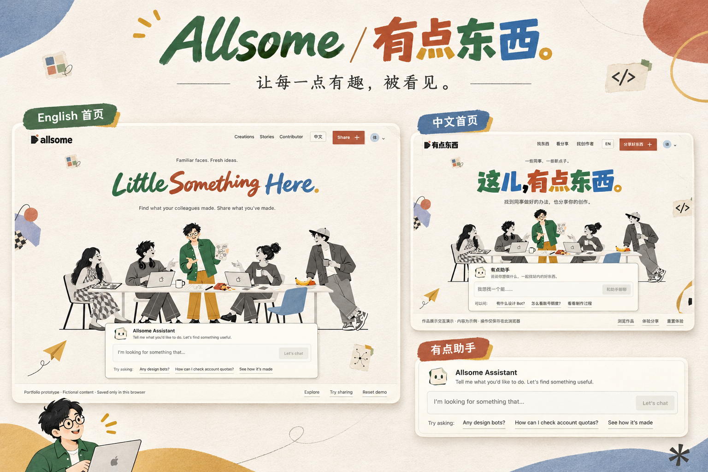
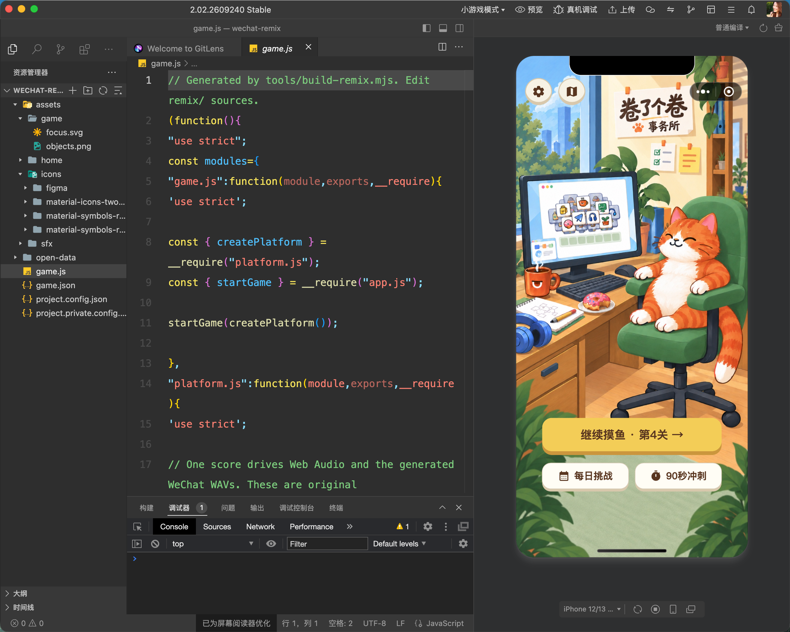

01 / 山野漫游 · 国家公园体验探索
把一次好奇，变成走进真实山野的兴趣。
公开原型 · 持续完善
让屏幕前的一次好奇，成为走进山野的开始。

打开海南体验 ↗与纪录片导演吕孝波的一次交流，让我被他发起「国家公园」项目的初心打动：让忙碌的城市人重新看见山河，也让孩子有机会亲近真实的自然。我因此尝试做一个可以自由探索的线上空间，希望让一次屏幕前的相遇，生出亲自走进山野的兴趣。
我希望海南热带雨林的体验能接近第一人称游戏：走进林间，听见脚步和风吹树叶的声音，转头时偶然发现一只小动物。借助 AI 推进场景与交互实现，我也需要不断检查，眼前的画面是否真的接近想象中的雨林。
搭建过程中，场景曾出现塑料般的质感，树干与树叶缺乏自然连接，天空也一度像平铺的背景。脚步声与风吹树叶声还没有形成期待中的配合，偶遇小动物的惊喜也仍是希望继续实现的体验。
目前可以进入海南场景探索并观看影像，但距离自然、可信、值得停留的雨林世界，还有明显差距。
02 / 将进酒 · 古诗声画实验
把古诗变成可以听见、看见和参与的阅读体验。
可体验作品 · 古诗声画实验
让古诗多一种可以听见、看见和参与的读法。

打开诗境 ↗看到身边的同事借助 AI，为孩子制作定制的教辅工具，我开始思考：古诗中的情绪、意象与节奏，能否通过声音、画面和互动，让学习者更愿意接近？《将进酒》由此成为一次声画阅读实验。
我先与 Codex 讨论诗句如何分幕、每一幕怎样展开，再用 ChatGPT Image 生成关键画面、可灵制作视频、Qwen3-TTS 提供朗读，最后把素材与诗文交互组合起来。AI 提供实现与素材，我负责叙事判断、内容校准和最终取舍。
当前作品形成了四幕可体验的诗境。我希望它能让阅读多一些感受和参与，也让原本觉得古诗难懂的人愿意多停留一会儿。它目前仍是一项个人阅读体验实验，尚未经过课堂或学习效果验证。
03 / Allsome · 创作交流空间
给同事做的小东西，留一个被看见的位置。
交互原型 · 未正式上线
从同事自发制作的工具和趣味应用出发，探索一个公司内部的创作交流空间。

打开演示 ↗身边的同事开始用 AI 做出各种小“东西”：插件、Bot、Skill、应用和本地工具，有的解决工作中的问题，有的来自生活里的趣味需求。中秋礼盒引发了交换和交易的需求，一位同事便做了“饼交所”。这些作品让我看到，创作机会就藏在每天遇到的事情里。
作者往往缺少让更多人认识作品的窗口。我因此想发起一个公司内部、由同事自发参与的创作交流空间，让有用又有趣的尝试被发现，也让有想法的人找到彼此。
首页选取包括我在内、来自不同岗位的同事形象，做成围坐创作的卡通人物。访客注视他们时，人物会转头打招呼；画面里留着的空椅子，则邀请正在观看的人加入。
我借助 AI 完成了产品结构与交互演示，目前尚未正式上线。演示中的内容是示例，用于呈现产品方向。
04 / 卷了个卷 · 开源三消改造
从喜欢玩消除游戏，到做一个自己的版本。
微信小游戏 · 个人版本实玩
从喜欢玩消除游戏，到做一个自己的版本。
视频暂时无法播放。你可以直接打开视频文件。 直接打开视频 ↗
我平时很喜欢玩《开心消消乐》，也想试着做一款带有自己风格的消除游戏。找到一个开源三消项目后，我借助 Codex，在它的基础上重新设计美术、玩法和规则，做出了带有办公室与“摸鱼”趣味的《卷了个卷》。
制作过程中，Codex 也帮助我逐步理解微信小游戏与小程序在运行环境和画面实现方式上的区别。我开始学习在微信开发者工具中使用模拟器、调试游戏，再拿到手机上实际试玩，并接触发布上架流程。
本页视频展示的是我个人版本的手机实玩：从关卡和限时挑战，到槽位选择、消除反馈与得分结算，让一个兴趣慢慢成为可以亲手游玩的作品。
先熟悉新的开发环境
在微信开发者工具中运行小游戏并检查实际画面。
微信开发者工具

放大查看完整原图 ↗原项目曾有线上版本；当前视频只标注为个人版本实玩，不将它描述为与既有发布版相同。
05 / 手势粒子星球 · 视觉与手势交互实验
伸出手，试着转动一颗星球。
交互实验 · 视频演示
把视觉设想和手势规则，转化为可观看的浏览器交互实验。
视频暂时无法播放。你可以直接打开视频文件。 直接打开视频 ↗
这次实验从对视觉与手势交互的好奇出发：把橙色粒子星球、环绕星环和手部动作联系起来，尝试用自然语言定义画面与控制方式。
我借助 Gemini 网页版的 Canvas 模式推进实现，用 Three.js 呈现三维画面，结合 MediaPipe 提供的手部识别能力。提示词中不仅描述星球与星环，也明确了手势对应的视角变化、移动速度，以及避免镜头穿入星球的安全距离。
这让我接触到开源工具积累的能力，也开始尝试过去觉得需要专业技术背景才能触及的交互。下面的视频保留了实际手势操作与屏幕效果。